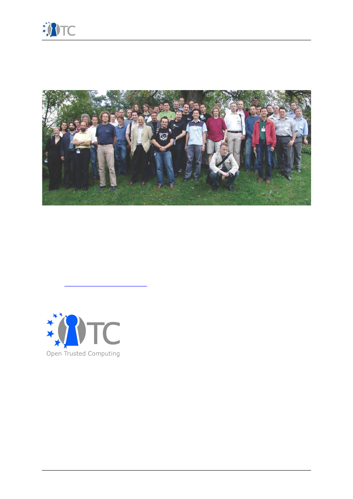

Executive Summary
V0.1
OpenTC
Executive summary of the first project year
1 Executive summary
Introduction
The Open Trusted Computing (OpenTC) project develops a trusted and secure
computing systems based on open source software. This IST FP6 project No
027635 targets traditional computer platforms as well as embedded systems
such as mobile phones, aiming to reduce system-related threats, errors and
malfunctions. In today's computing platforms, the lack of security has given rise
to waves of successful attacks and system crashes, resulting in severe economic
damage to enterprises and private users, as well as endangering critical
infrastructure. Using the trust and security approach of the OpenTC project,
system-protection measures will be an integral part of the computer system
kernel. The weaknesses of today's’ computers, which require that insecure
operating systems are shielded by an ever increasing number of protective layers
such as virus scanners and firewalls, will be complemented and potentially
replaced by integrated trust and security.
OpenTC will improve reliability during authentication, making it easier to defend
against current network threats such as phishing, viruses, trojan horses,
corruptive software and other attacks from hostile sources. Another advantage of
OpenTC is that it enables computers to run critical applications such as trusted
banking or e-commerce software in their own, sealed off, compartments that are
protected against external access. The framework developed in this project can
eliminate most current assaults and dangers in the computing world.
These techniques can also be employed to ward off threats to the reliability and
security of applications and software in devices such as, for example, mobile
phones. Insecure and unreliable behaviour can be eliminated from the start in
new IT-based equipment and applications by exploiting the results of the OpenTC
project. The results will be open source and freely available to users and
researchers.
General technical goals
The enabling technology used in OpenTC for computer security is the design and
implementation of a layered system architecture in which a special computer
chip, the Trusted Platform Module (TPM) – similar to a smart card – performs the
security functions in a protected hardware environment. The OpenTC project has
three major technical objectives:
●
Developing a secure operating system architecture consisting of universal
virtualization layers, Trusted Software Stack (TSS) for Linux, and TC and
TPM management software
●
Producing management infrastructures and software protocols for Trusted
Computing in the areas of policy management, including distributed policy
enforcement, security state monitoring and management
,
network
management, and configuration management software
●
Producing prototype applications for Trusted Computing system support in
the areas of CA, PKI, attestation and zero knowledge authentication,
Trusted WYSIWYS (What You See Is What you Sign) and Proof-of-Concept
for digital signing and verification).
Open_TC Activity Report 1
1/4

Executive Summary
V0.1
To support these prototypes, OpenTC addresses the Integration of TC into
existing Public Key Infrastructures and the adaptation of TC APIs (especially the
TSS stack of the TPM) to other programming languages, in particular JAVA.
First years results
The General Requirement and Specification was produced and reviewed within
the first six months. Work on this document also yielded a number of convincing
use cases that served as guidance for subsequent work on platform, protocol and
management characteristics. The document also includes a user survey and a
media analysis. It is currently under review for its second version to include
additional aspects revealed during the work on prototypes.
At the level of basic interfaces and trust layers, we have produced components
for bootup measurement. They cover both the legacy concept of a trusted boot
chain as defined by the TPMv1.1b specification (Trusted GRUB v0.9.8) as well as
the the new mechanisms provided by the TPMv1.2 specification in conjunction
with new CPU initialization features (OSLO boot loader for L4, TPM v1.2/
skinit
support integrated in GRUB 2.0 and
Xen
). A Linux-based implementation for the
Trusted Software Stack
as defined by the TCG was produced. In parallel, a JAVA
interface for the TSS was developed using an existing TSS. The integration of
both components is currently under test.
At the level of trusted virtualization and operating systems, we developed a first
version of a basic management interface common to both virtualization layers
(Xen and L4) used by OpenTC. Mechanisms for generic tasks and inter-task
communication were developed for Xen that will allow to implement security
services with a drastically reduced Trusted Computing Base. Several security
services for Xen and L4 were designed and prototyped. Working towards the goal
of a unified user experience and common architectural principles we designed
and implemented a demonstrator prototype.
At the level of security management and infrastructure we gathered, analysed
and compiled requirements for data centre based computing services. The
results of this analysis were submitted as input for the specification activities of
the Basic Management Interface. The analysis resulted in a comprehensive white
paper detailing use case scenarios, corresponding work flows, and management
activities. We delivered a life cycle model for managed execution environments
and the first version of a design and prototype for configuration management, an
analysis of the requirements for property-based attestation and the design of a
corresponding system model. Finally, we designed and implemented prototypic
security services as part of the the demonstrator prototype.
At the level of prototype and test applications for proof-of-concept and use
examples, we have produced outlines of their applications designs as part of the
General Requirement and Specification
. These application designs were refined in
a subsequent cycle and broken down into work plans where required by the
Technical Annex. The start of implementation activities on the actual OpenTC
architecture is linked to the release of the project's first demonstrator prototype,
which is scheduled for end of January 2007. One application (multi-factor
authentication) was chosen as early proof-of-concept 'yardstick' for the
demonstrator prototype.
At the level of development support, quality evaluation and certification, we have
investigated the appropriateness of currently available tools, development
models and procedures for Open Source software development in general and
OpenTC's development efforts in particular. This yielded a general methodology
for the production of trustworthy systems and software. Within the first year we
developed, extended and adapted tools for automated source code analysis and
vulnerability testing to make them applicable for the code base of OpenTC. They
Open_TC Activity Report 1
2/4

Executive Summary
V0.1
are the starting point for an in-depth analysis to carefully chosen, security critical
components of the OpenTC architecture (e.g., memory or I/O management and
sharing). We have also worked on best-practice principles and programming
guidelines for developers that are geared towards the production of evaluable
code.
In the work area of applying trusted computing for embedded controllers and
mobile phones, we have produced an analysis of market, user and mobile
network provider requirements which yielded a minimum set of trust
functionalities for this application context. Security and policy requirements for
TC on a mobile platform were determined by analysing key application
requirements, resulting in an initial design overview of a trusted mobile OS. The
L4/fiasko microkernel was selected as appropriate starting point and partially
ported to the S-GOLD platform. We have produced OMA DRM v2 and IMEI: use
case description, requirement analysis and TPM and TSS mapping/profiling and is
currently competing the same procedure for software download and secure
software use.
Dissemination of knowledge and results
To enable maximum community benefit, the project results will be integrated
into, and distributed as, Open Source software, supporting Linux in particular. A
main objective is the development of complete trusted Linux kernels for different
use classes, which will be distributed as part of the Novell/SUSE (a project
member) Linux distribution package.
At the level of dissemination and training, we have worked on establishing
concepts and results of OpenTC in the areas of scientific activities,
standardization, and education. OpenTC partners were present at 12 national and
14 international presentations at public events (conferences, business events),
10 national and 12 international articles published in various media, ranging from
scientific conferences to Internet websites. Further, 2 national and 12
international collaborations were set up between project partners and other
institutions or companies, and a close partnership with the German EMSCB
project was established. Activities on standardization included a proposal for the
Open Release MAF (MPEG Application Format) in particular within the MPEG-A
Standard, and collaborations on standardization activities with companies from
Spain and Korea. We actively participated at the First European Summer School
on Trusted Infrastructure Technologies in Oxford, including a research workshop
on “Future TPM Functionalities”.
By making the project results widely available, the OpenTC consortium expects to
encourage Europe’s IT industry to invest in trust and security development.
Especially small and medium-sized enterprises, industry, and research
institutions will be enabled to develop and market trusted computing systems
and applications independently. The integration of trust and security into next-
generation European products will make these more competitive on the world
market.
Open Trusted Computing partners
The OpenTC project is formed by an international multidisciplinary consortium
consisting of 23 partners: Technikon Forschungs- und Planungsgesellschaft mbH
(project coordination, AT); Hewlett-Packard Ltd (technical leader, UK); AMD
Saxony LLC & Co. KG (DE); Budapest University of Technology and Economics
(HU); Commissariat à l’Energie Atomique – LIST (FR); COMNEON GmbH (DE);
Forschungszentrum Karlsruhe GmbH – ITAS (DE); Horst Görtz Institute for IT
Security, Ruhr-Universität Bochum (DE); IBM Research GmbH (CH); Infineon
Technologies AG (DE); INTEK Closed Joint Stock Company (RU); ISECOM (ES);
Katholieke Universiteit Leuven (BE); Politecnico di Torino (IT); Portakal Teknoloji
Open_TC Activity Report 1
3/4

Executive Summary
V0.1
(TR); Royal Holloway, University of London (UK); SUSE Linux Products GmbH (DE);
Technische Universitaet Dresden (DE); Technische Universitaet Graz (AT);
Technische Universitaet Muenchen (DE); Technical University of Sofia (BR);
TUBITAK – UEKAE (TR); and University of Cambridge (UK).
Open Trusted Computing consortium
The total volume of the project is estimated to 17.1 Million Euros, part of which
will be contributed by the EC. Visit www.opentc.net to learn more.
For further information please contact:
Technikon Forschungs- und Planungsgesellschaft mbH
Richard-Wagner-Strasse 7, 9500 Villach, Austria
Tel.: +43 4242 233 55-0, Fax: +43 4242 233 55-77
Email:
coordination@opentc.net
OTC Logo
OTC Disclaimer
The information in this document is provided “as is”, and no guarantee or
warranty is given that the information is fit for any particular purpose. The user
thereof uses the information at its sole risk and liability.
Open_TC Activity Report 1
4/4
Picture 1: OpenTC Consortium at General Assembly Meeting in Zurich Sept. 2006
Document Outline